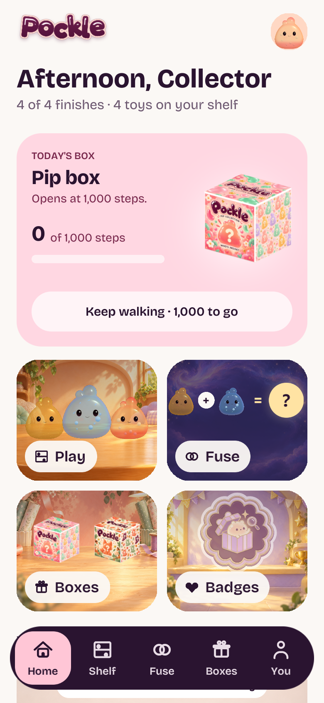
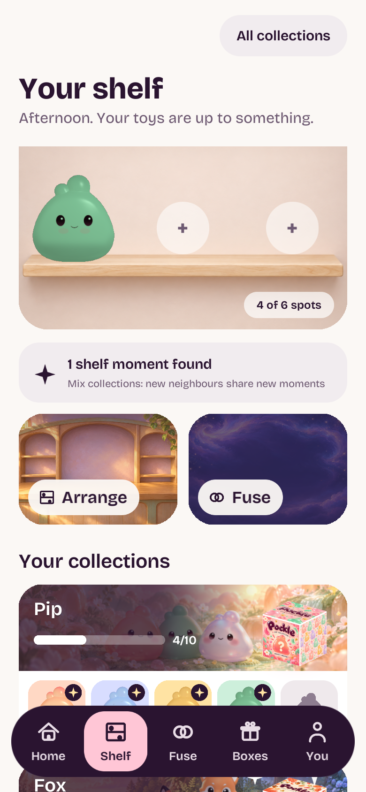
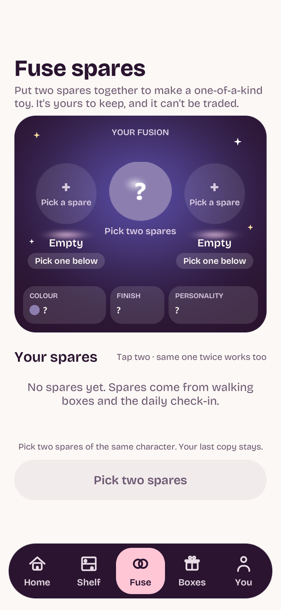

Actual Unity6000.6.5f1 captures at390×844 logical layout. Four large painted Home tiles, five navigation tabs, and large Arrange/Fuse shelf buttons. Existing actual-model silhouettes and Tula removal are retained. Fixture has four starter Pips and no spares. Daily reward rotation is not part of this UI integration.


